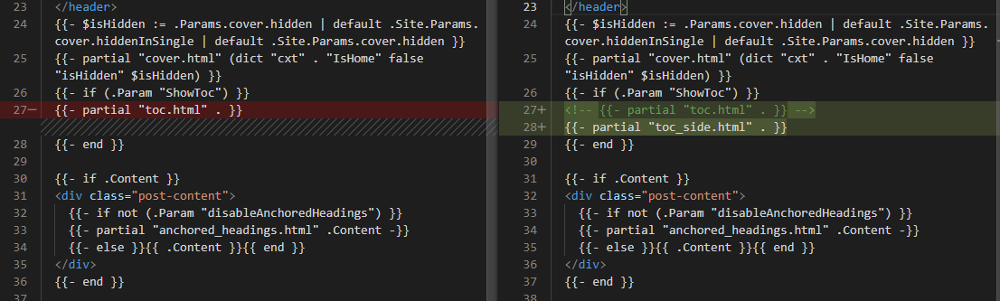

Hugo 主题配置——Papermod#
官方链接：
Papermod 主题默认使用 .yaml 格式作为配置文件，因此新建网站时可以使用 -f 设置 yml 格式：
1
|
hugo new site <name of site> -f yml
|
将主题添加到网站文件夹中：
1
2
|
git submodule add git@github.com:adityatelange/hugo-PaperMod.git themes/PaperMod --depth=1
git submodule update --init --recursive # needed when you reclone your repo (submodules may not get cloned automatically)
|
导航菜单与页面配置#
…待更新…
首页样式配置#
…待更新…
文章顶端信息#
参考：Sulv’s Blog：Hugo博客修改post_meta头部信息
添加文章修改日期#
将theme目录下的文件：layouts/partials/post_meta.html，复制到layouts对应目录下，并添加以下内容：
1
2
3
4
|
<!-- 更新时间 -->
{{- if (.Param "ShowLastMod") -}}
{{- $scratch.Add "meta" (slice (printf "Updated: %s" (.Lastmod.Format (.Site.Params.dateFormat | default "January 2, 2006")))) }}
{{- end }}
|
在Hugo的配置文件config.yml中的params下添加以下内容：
1
2
3
|
params:
...
ShowLastMod: true # 显示文章更新时间 配合post_meta.html
|
文章开头添加相应字段即可：
1
|
lastmod: 2022-03-18T13:59:59+08:00
|
此外，可以在archetypes/default.md中添加lastmod字段，之后创建文章时会自动生成该部分内容。
其他样式也可以酌情进行修改
1
2
3
4
5
6
7
8
9
10
11
12
13
14
15
16
17
18
19
20
21
22
23
24
25
26
27
28
29
30
|
{{- $scratch := newScratch }}
<!-- 创建时间 -->
{{- if not .Date.IsZero -}}
{{- $scratch.Add "meta" (slice (printf "创建: <span title='%s'>%s</span>" (.Date) (.Date.Format (default "January 2, 2006" .Site.Params.DateFormat)))) }}
{{- end }}
<!-- 更新时间 -->
{{- if (.Param "ShowLastMod") -}}
{{- $scratch.Add "meta" (slice (printf "更新: %s" (.Lastmod.Format (.Site.Params.dateFormat | default "2006-01-02")))) }}
{{- end }}
<!-- 统计字数 -->
{{- if (.Param "ShowWordCounts") -}}
{{- $scratch.Add "meta" (slice (default (printf "字数: %d字" .WordCount))) }}
{{- end }}
<!-- 大概需要花费的阅读时间 -->
{{- if (.Param "ShowReadingTime") -}}
{{- $scratch.Add "meta" (slice (default (printf "时长: %d分钟" .ReadingTime))) }}
{{- end }}
<!-- 作者 -->
{{- with (partial "author.html" .) }}
{{- $scratch.Add "meta" (slice .) }}
{{- end }}
<!-- 分隔方式 -->
{{- with ($scratch.Get "meta") }}
{{- delimit . " | " -}}
{{- end -}}
|
作者的中文显示要找到layouts/partials/author.html，在如下位置加入中文
1
|
作者: {{- $author := (.Params.author | default .Site.Params.author) }}
|
文章基础配置#
…待更新…
文章目录 TOC 侧边放置#
参考：Sulv’s Blog: Hugo博客目录放在侧边 | PaperMod主题
toc代码#
在Hugo根目录下的layouts文件夹下新建partials文件夹，并建立文件toc_side.html（<siteroot>/layouts/partials/toc_side.html），layouts文件夹中的内容优先级高于theme中主题的layouts文件夹。输入以下内容：
1
2
3
4
5
6
7
8
9
10
11
12
13
14
15
16
17
18
19
20
21
22
23
24
25
26
27
28
29
30
31
32
33
34
35
36
37
38
39
40
41
42
43
44
45
46
47
48
49
50
51
52
53
54
55
56
57
58
59
60
61
62
63
64
65
66
67
68
69
70
71
72
73
74
75
76
77
78
79
80
81
82
83
84
85
86
87
88
89
90
91
92
93
94
95
96
97
98
99
100
101
102
103
104
105
106
107
108
109
110
111
112
113
114
115
116
117
118
119
120
121
122
123
124
125
126
127
128
129
130
131
132
133
134
135
136
137
138
139
140
141
142
143
144
145
146
147
148
149
150
151
152
153
154
155
|
{{- $headers := findRE "<h[1-6].*?>(.|\n])+?</h[1-6]>" .Content -}}
{{- $has_headers := ge (len $headers) 1 -}}
{{- if $has_headers -}}
<aside id="toc-container" class="toc-container wide">
<div class="toc">
<details {{if (.Param "TocOpen") }} open{{ end }}>
<summary accesskey="c" title="(Alt + C)">
<span class="details">{{- i18n "toc" | default "Table of Contents" }}</span>
</summary>
<div class="inner">
{{- $largest := 6 -}}
{{- range $headers -}}
{{- $headerLevel := index (findRE "[1-6]" . 1) 0 -}}
{{- $headerLevel := len (seq $headerLevel) -}}
{{- if lt $headerLevel $largest -}}
{{- $largest = $headerLevel -}}
{{- end -}}
{{- end -}}
{{- $firstHeaderLevel := len (seq (index (findRE "[1-6]" (index $headers 0) 1) 0)) -}}
{{- $.Scratch.Set "bareul" slice -}}
<ul>
{{- range seq (sub $firstHeaderLevel $largest) -}}
<ul>
{{- $.Scratch.Add "bareul" (sub (add $largest .) 1) -}}
{{- end -}}
{{- range $i, $header := $headers -}}
{{- $headerLevel := index (findRE "[1-6]" . 1) 0 -}}
{{- $headerLevel := len (seq $headerLevel) -}}
{{/* get id="xyz" */}}
{{- $id := index (findRE "(id=\"(.*?)\")" $header 9) 0 }}
{{- /* strip id="" to leave xyz, no way to get regex capturing groups in hugo */ -}}
{{- $cleanedID := replace (replace $id "id=\"" "") "\"" "" }}
{{- $header := replaceRE "<h[1-6].*?>((.|\n])+?)</h[1-6]>" "$1" $header -}}
{{- if ne $i 0 -}}
{{- $prevHeaderLevel := index (findRE "[1-6]" (index $headers (sub $i 1)) 1) 0 -}}
{{- $prevHeaderLevel := len (seq $prevHeaderLevel) -}}
{{- if gt $headerLevel $prevHeaderLevel -}}
{{- range seq $prevHeaderLevel (sub $headerLevel 1) -}}
<ul>
{{/* the first should not be recorded */}}
{{- if ne $prevHeaderLevel . -}}
{{- $.Scratch.Add "bareul" . -}}
{{- end -}}
{{- end -}}
{{- else -}}
</li>
{{- if lt $headerLevel $prevHeaderLevel -}}
{{- range seq (sub $prevHeaderLevel 1) -1 $headerLevel -}}
{{- if in ($.Scratch.Get "bareul") . -}}
</ul>
{{/* manually do pop item */}}
{{- $tmp := $.Scratch.Get "bareul" -}}
{{- $.Scratch.Delete "bareul" -}}
{{- $.Scratch.Set "bareul" slice}}
{{- range seq (sub (len $tmp) 1) -}}
{{- $.Scratch.Add "bareul" (index $tmp (sub . 1)) -}}
{{- end -}}
{{- else -}}
</ul>
</li>
{{- end -}}
{{- end -}}
{{- end -}}
{{- end }}
<li>
<a href="#{{- $cleanedID -}}" aria-label="{{- $header | plainify -}}">{{- $header | safeHTML -}}</a>
{{- else }}
<li>
<a href="#{{- $cleanedID -}}" aria-label="{{- $header | plainify -}}">{{- $header | safeHTML -}}</a>
{{- end -}}
{{- end -}}
<!-- {{- $firstHeaderLevel := len (seq (index (findRE "[1-6]" (index $headers 0) 1) 0)) -}} -->
{{- $firstHeaderLevel := $largest }}
{{- $lastHeaderLevel := len (seq (index (findRE "[1-6]" (index $headers (sub (len $headers) 1)) 1) 0)) }}
</li>
{{- range seq (sub $lastHeaderLevel $firstHeaderLevel) -}}
{{- if in ($.Scratch.Get "bareul") (add . $firstHeaderLevel) }}
</ul>
{{- else }}
</ul>
</li>
{{- end -}}
{{- end }}
</ul>
</div>
</details>
</div>
</aside>
<script>
let activeElement;
let elements;
window.addEventListener('DOMContentLoaded', function (event) {
checkTocPosition();
elements = document.querySelectorAll('h1[id],h2[id],h3[id],h4[id],h5[id],h6[id]');
// Make the first header active
activeElement = elements[0];
const id = encodeURI(activeElement.getAttribute('id')).toLowerCase();
document.querySelector(`.inner ul li a[href="#${id}"]`).classList.add('active');
}, false);
window.addEventListener('resize', function(event) {
checkTocPosition();
}, false);
window.addEventListener('scroll', () => {
// Check if there is an object in the top half of the screen or keep the last item active
activeElement = Array.from(elements).find((element) => {
if ((getOffsetTop(element) - window.pageYOffset) > 0 &&
(getOffsetTop(element) - window.pageYOffset) < window.innerHeight/2) {
return element;
}
}) || activeElement
elements.forEach(element => {
const id = encodeURI(element.getAttribute('id')).toLowerCase();
if (element === activeElement){
document.querySelector(`.inner ul li a[href="#${id}"]`).classList.add('active');
} else {
document.querySelector(`.inner ul li a[href="#${id}"]`).classList.remove('active');
}
})
}, false);
const main = parseInt(getComputedStyle(document.body).getPropertyValue('--article-width'), 10);
const toc = parseInt(getComputedStyle(document.body).getPropertyValue('--toc-width'), 10);
const gap = parseInt(getComputedStyle(document.body).getPropertyValue('--gap'), 10);
function checkTocPosition() {
const width = document.body.scrollWidth;
if (width - main - (toc * 2) - (gap * 4) > 0) {
document.getElementById("toc-container").classList.add("wide");
} else {
document.getElementById("toc-container").classList.remove("wide");
}
}
function getOffsetTop(element) {
if (!element.getClientRects().length) {
return 0;
}
let rect = element.getBoundingClientRect();
let win = element.ownerDocument.defaultView;
return rect.top + win.pageYOffset;
}
</script>
{{- end }}
|
调用代码#
找到主题目录下的layouts/_default/single.html文件，将其复制到根目录下的layouts/_default/single.html中，找到其调用代码
1
2
3
|
{{- if (.Param "ShowToc") }}
{{- partial "toc.html" . }}
{{- end }}
|
修改为
1
2
3
4
|
{{- if (.Param "ShowToc") }}
<!-- {{- partial "toc.html" . }} -->
{{- partial "toc_side.html" . }}
{{- end }}
|

修改css#
在Hugo根目录新建assets文件夹，此时该目录比theme主题目录中的assets文件夹具有更高的优先级。在根目录下的assets中创建css/extended/blank.css，加入以下代码：
1
2
3
4
5
6
7
8
9
10
11
12
13
14
15
16
17
18
19
20
21
22
23
24
25
26
27
28
29
30
31
32
33
34
35
36
37
38
39
40
41
42
43
44
45
46
47
48
49
50
51
52
53
54
55
56
57
58
59
60
61
62
63
64
65
66
67
68
69
70
71
72
73
74
75
76
|
:root {
--nav-width: 1380px;
--article-width: 650px;
--toc-width: 300px;
}
.toc {
margin: 0 2px 40px 2px;
border: 1px solid var(--border);
background: var(--entry);
border-radius: var(--radius);
padding: 0.4em;
}
.toc-container.wide {
position: absolute;
height: 100%;
border-right: 1px solid var(--border);
left: calc((var(--toc-width) + var(--gap)) * -1);
top: calc(var(--gap) * 2);
width: var(--toc-width);
}
.wide .toc {
position: sticky;
top: var(--gap);
border: unset;
background: unset;
border-radius: unset;
width: 100%;
margin: 0 2px 40px 2px;
}
.toc details summary {
cursor: zoom-in;
margin-inline-start: 20px;
padding: 12px 0;
}
.toc details[open] summary {
font-weight: 500;
}
.toc-container.wide .toc .inner {
margin: 0;
}
.active {
font-size: 110%;
font-weight: 600;
}
.toc ul {
list-style-type: circle;
}
.toc .inner {
margin: 0 0 0 20px;
padding: 0px 15px 15px 20px;
font-size: 16px;
}
.toc li ul {
margin-inline-start: calc(var(--gap) * 0.5);
list-style-type: none;
}
.toc li {
list-style: none;
font-size: 0.95rem;
padding-bottom: 5px;
}
.toc li a:hover {
color: var(--secondary);
}
|
重新生成站点即可预览效果。